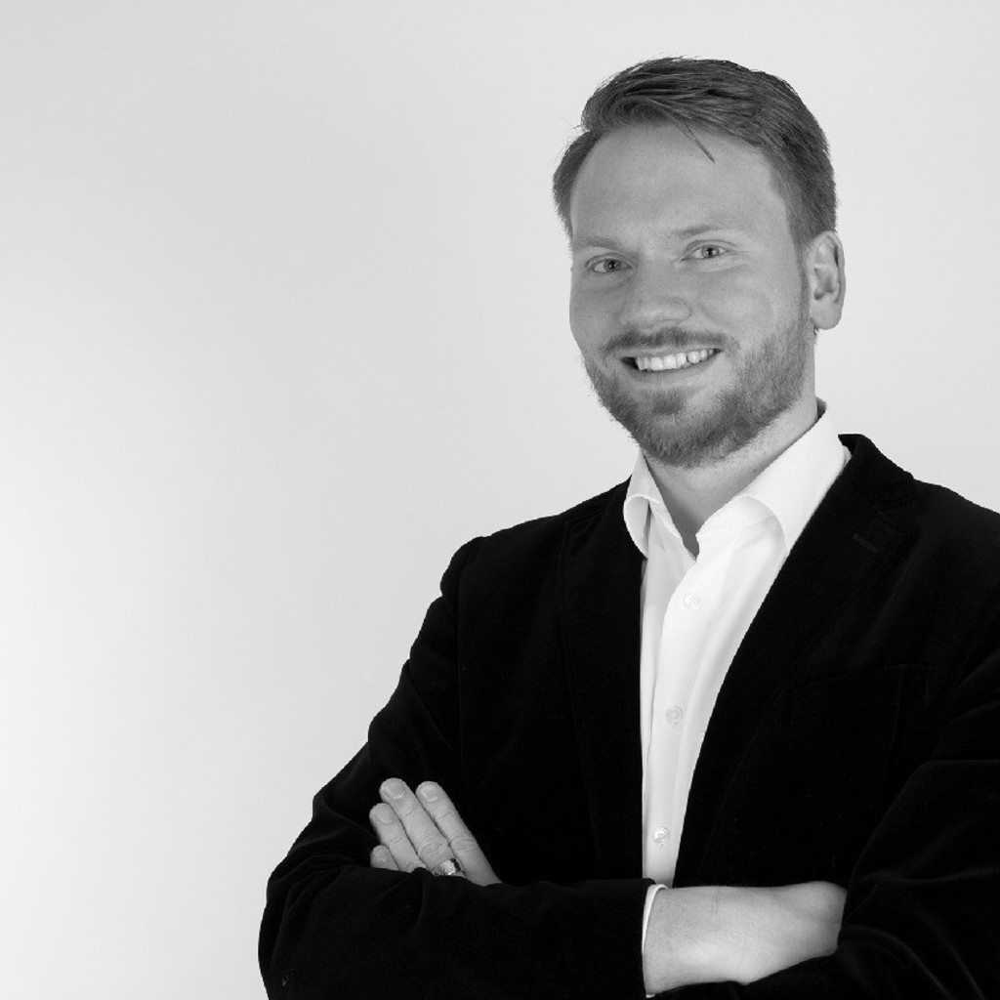

Prof. Dr.-Ing. Hannes Höppner
Compliant robotic hands and arms, human stiffness measurement and teleimpedance control.
hannes.hoeppner@bht-berlin.de · +49 30 4504-2357 · ORCID 0000-0003-3184-7653 · Google Scholar · ResearchGate · BHT profile
Profile
Hannes Höppner has been Professor for Humanoid Robotics at Berliner Hochschule für Technik since October 2019. He heads the Soft Interactive Robotics Laboratory and the teaching laboratory for Humanoid Robotics.
His research combines the design of compliant robotic hands and arms with the measurement of human hand and arm stiffness. He develops variable stiffness mechanisms and investigates how human impedance can be transferred to robots through teleoperation. Further interests include learning manipulation skills from demonstration and safety systems for physical human-robot collaboration.
Before joining BHT, he led sports technology development at the Institute of Applied Training Science in Leipzig and conducted research at the German Aerospace Center (DLR), including the EU project soma. He received his doctorate from the Technical University of Munich in 2016.
Research topics
Soft Robotic Hands
Variable stiffness and programmable fingertip compliance
Variable Stiffness Actuation
Nonlinear springs and multiarticular couplings
Teleoperation & Teleimpedance
Measuring human impedance and transferring it to robots
Learning from Demonstration
Dynamic manipulation skills learned from demonstration
TIAGo Pro
The mobile humanoid platform of the lab
Applications
Greenhouse, care, teaching and instrument reprocessing
Current projects
tele.interaction
Development of soft manipulation and visuo-haptic teleoperation for applications in greenhouse work, teaching and care.
APPL-FM
Applied foundation model research; the SIRo contribution is data-efficient learning from demonstration for dexterous manipulation.
Robo4Care
SIRo investigates robotic assistance for fine-motor tasks in ambulatory care. Another research lab investigates exoskeletons within the project.
SIRo-AEMP
Validation of the SIRo Soft Hand in the reprocessing of surgical instruments.
Previous projects
3DP-SROB
Led a feasibility study of multi-material 3D printing for compliant robotic joints, including the integration of mechatronic components during printing.
soma (Soft Manipulation)
Grasping and manipulation using contact with the environment. At DLR, he led work on human grip biomechanics, soft robotic hands and teleoperation. The project was coordinated by TU Berlin.
THE (The Hand Embodied)
Research on how the human hand’s physical properties influence exploration, grasping and manipulation. His DLR contribution included devices for continuous measurement of intrinsic hand properties and systems that convey prosthetic grip forces through feedback to the foot.
VIACTORS
Variable impedance actuation inspired by the human neuromechanical system, with the aim of improving safety in human-robot interaction. His DLR contribution focused on variable stiffness actuators for humanoid arms.
STIFF
Research on human impedance adaptation and its application to robotic hand-arm systems. His DLR contribution included devices for continuously measuring intrinsic properties of the human hand and arm.
Awards
Honorable Mention, IEEE RA-L
For co-authored research on motion tracking and stiffness control in variable-stiffness actuators. One of five honorable mentions among more than 1,100 papers published in 2022, presented at ICRA 2023.
DLR Idea Award
Awarded with colleagues for compliant robotic hands for sensitive food handling.
KUKA Innovation Award
For developing an end-effector airbag for safer human-robot collaboration as part of DLR’s RAS team.
Teaching
In BHT’s Bachelor’s programme in Humanoid Robotics, he teaches mechanical design, manufacture and maintenance of robotic systems, and human-robot interaction.
In the Robotics Project, second-semester students work in groups of four to design, manufacture and test a robotic hand on a Franka Emika Panda arm. They combine tendon-driven mechanisms, servo actuation and digital fabrication, then evaluate their designs in grasping tasks with objects of different shapes and material properties.
Publications
The lab’s publication list includes his current research and earlier work at DLR. His patents cover robotic joints, grippers and hands, methods for measuring human stiffness, and protective devices for manipulators.
Background
- since 2019 · Professor for Humanoid Robotics, Berliner Hochschule für Technik. Head of the SIRo Lab and of the teaching laboratory for Humanoid Robotics; member of the faculty council of Fachbereich VII.
- 2018–2019 · Group leader, sports technology development, Institute of Applied Training Science (IAT), Leipzig. Automatic joint tracking, drone-based athlete following, sport-specific measurement setups.
- 2009–2018 · Scientific researcher, German Aerospace Center (DLR), Institute of Robotics and Mechatronics. Principal investigator at DLR for the EU project soma from 2015.
- 2016 · PhD, Technical University of Munich, supervised by Patrick van der Smagt and Veit Senner: Analysis of Human Intrinsic Stiffness Modulation and its Use in Variable-Stiffness Robots.
Organisation chair of the Summer School on Impedance (2011) and the Summer School on Soft Manipulation (2017), both on Frauenchiemsee, Germany.